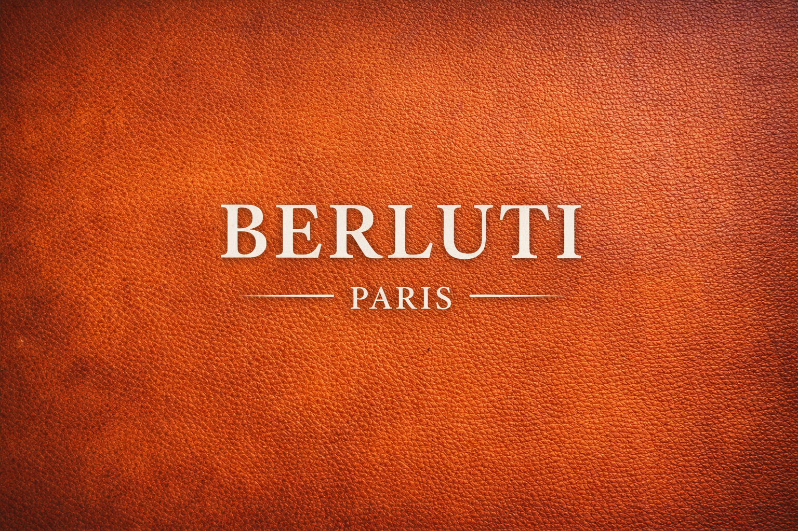

特徴
- ヴェネチアレザーへの「パティーヌ」による唯一無二の色合い
- 一枚革で仕立てるホールカットシューズ「アレッサンドロ」
- 既成靴の概念を超える、エレガントで芸術的なデザイン
向いてる人
- 芸術性や唯一無二のデザインを求める方
- ステータスシンボルとなる最高級の革靴を求める方
- パーティーや特別なシーンで足元を華やかに演出したい方
代表モデルの例
- アレッサンドロ (Alessandro)
- アンディ (Andy)
- スクリット (Scritto)
上記は代表作の一例です。

革の宝石と称される、芸術的なパティーヌ染色。
結論：サイズ感の目安は、やや細身でロングノーズなモデルが多い傾向にあります。
1895年創業、フランスの高級紳士靴ブランド。 芸術的な染色技術「パティーヌ」で世界中のセレブリティを魅了し続けています。
上記は代表作の一例です。